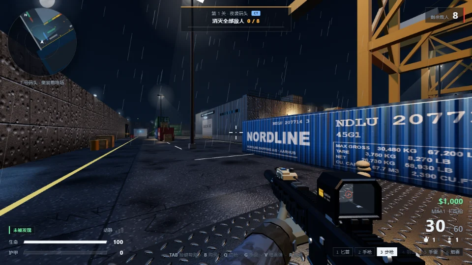

实机截图扮演反恐精英（M4A1）或恐怖分子（AK-47），在午夜集装箱港口展开 5 关战役与无尽模式对抗。双方遵循对等规则：100 点自动回血、听声辨位、手雷与跌落伤害。
- 完整武器库与穿透：战术匕首（背刺秒杀）、P226、M4A1 / AK-47、AX-50 重狙、手雷与烟雾弹；子弹可穿透木箱并引爆油桶。
- 立体战术 AI：巡逻兵与屋顶狙击手支持沿斜坡登顶追击、投掷烟雾与手雷、躲避爆炸及空间化脚步/换弹音效。
- 经济与自定义：击杀掉落现金/弹药/护甲，按 B 打开 3D 武器商店；支持双语切换、准星配色与本地战绩保存。
核心操作
WASD 移动
左键 开火
右键 开镜
1–6Q 切枪
G 手雷
V 烟雾
B 商店
Tab 帮助
开始游玩 →
games/cs.html